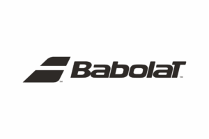
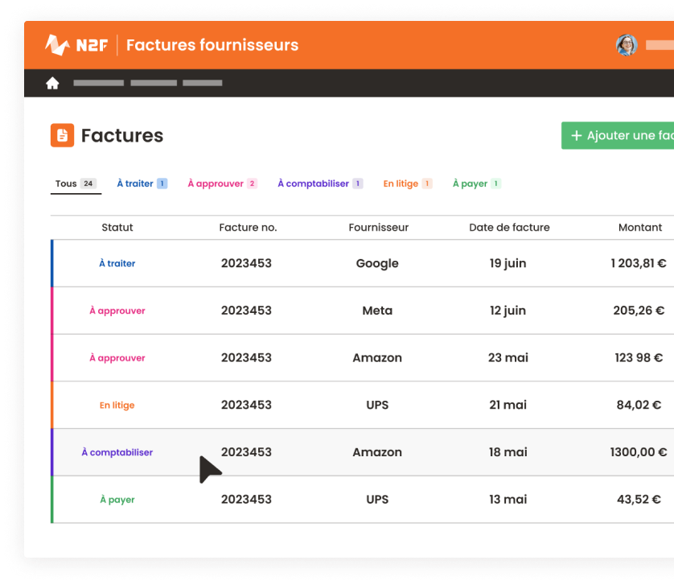
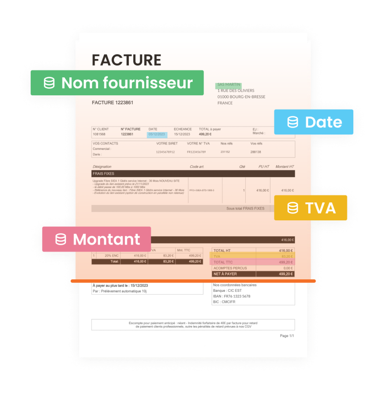
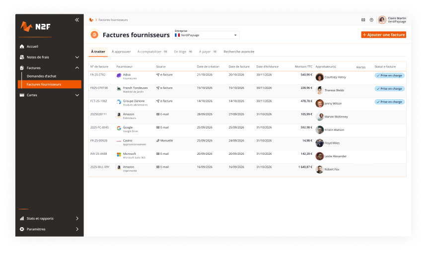
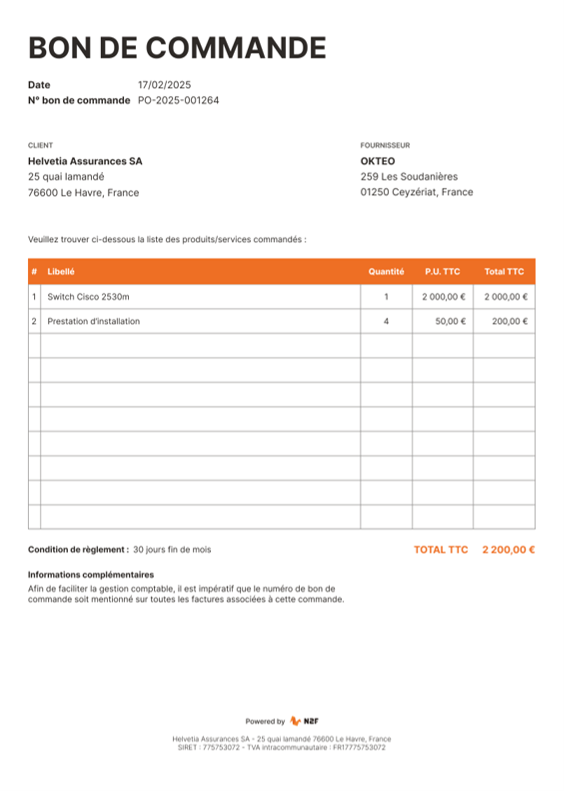
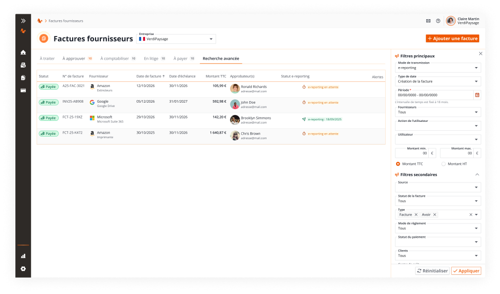
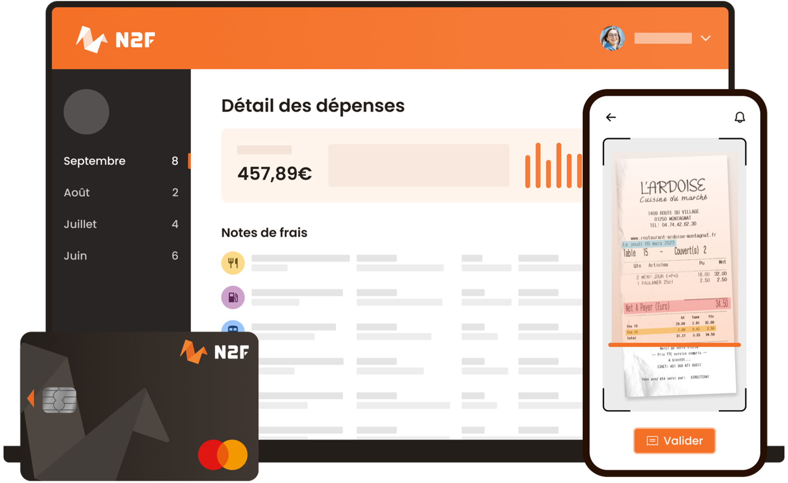
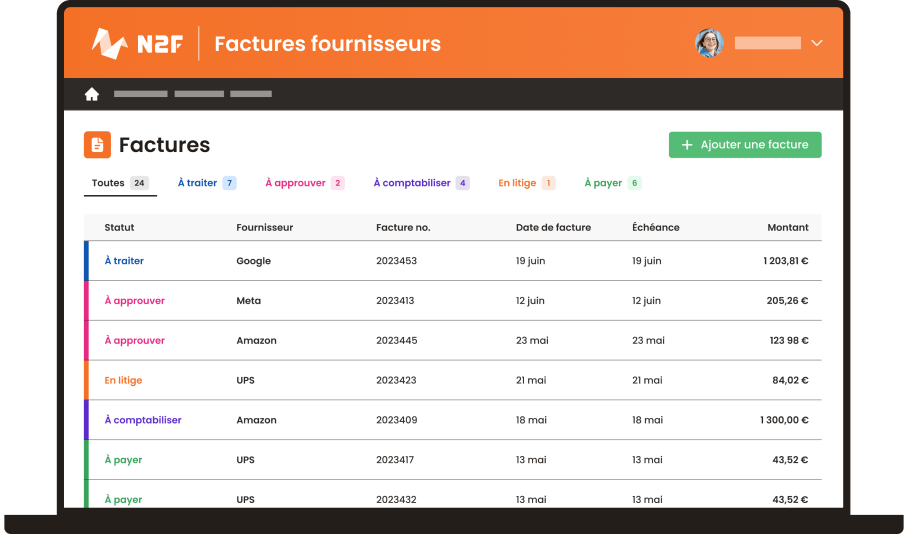
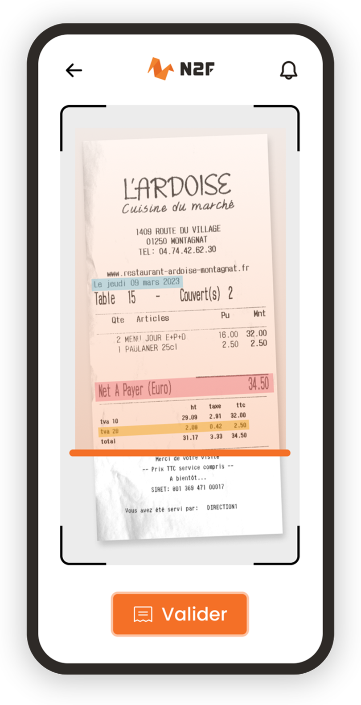

Ils automatisent leurs factures avec N2F

Saisie manuelle, erreurs, doublons, retards de paiement. N2F automatise l'intégralité de votre cycle fournisseur — OCR + IA, workflows de validation, rapprochement 3 voies, et bien plus. La seule suite qui combine factures + notes de frais + cartes.

Ils automatisent leurs factures avec N2F

Chaque mois, votre équipe finance perd des heures sur des tâches qui devraient être automatisées.
Ressaisie des montants, fournisseurs, TVA. Doublons non détectés. 75% des erreurs de paiement viennent de la saisie manuelle.
Factures perdues dans les emails, circuits de validation flous, relances fournisseurs. Délai moyen de traitement : 15 jours au lieu de 3.
Impossible de savoir en temps réel combien vous dépensez par fournisseur, par entité, par projet. Le DAF navigue à l'aveugle.
N2F couvre l'intégralité du cycle fournisseur. Pas un ERP généraliste : un spécialiste AP. Chaque fonctionnalité est pensée pour automatiser, sécuriser et accélérer vos factures.

Notre IA lit vos factures et extrait automatiquement le fournisseur, la date, la TVA et le montant — avec une extraction automatique haute précision. Les données sont pré-remplies, les doublons détectés, les anomalies signalées avant paiement.

Créez vos demandes d'achat, faites-les approuver selon vos circuits internes, puis générez automatiquement le bon de commande. Le lien DA → BC → Facture est tracé de bout en bout.

Configurez des circuits de validation multi-niveaux selon vos règles métier : montant, entité, type de dépense, axe analytique. Chaque facture suit le bon chemin, chaque approbateur est notifié au bon moment.

Correspondance automatique entre Bon de Commande, Bon de Livraison et Facture. Les écarts sont signalés, les litiges sont tracés et gérés dans N2F. Fini les tableaux Excel de suivi.

Suivez vos budgets en temps réel par axe analytique, par entité, par projet. Alertes automatiques en cas de dépassement. Le DAF voit exactement où passe chaque euro, avant qu'il ne soit dépensé.

Gérez toutes vos sociétés depuis une seule plateforme. Chaque entité a ses propres workflows, axes analytiques et exports comptables. Vision consolidée pour la DAF groupe, autonomie pour chaque filiale.

N2F est la SEULE solution du marché qui réunit factures fournisseurs, notes de frais et cartes corporatives Mastercard dans une plateforme unique. Un seul outil pour la DAF, une seule intégration ERP, un seul interlocuteur.
Export comptable automatique vers Sage, Cegid, SAP, Oracle, Microsoft Dynamics et Netsuite grâce aux connecteurs natifs. Écritures comptables générées en 1 clic. APIs bidirectionnelles pour synchronisation continue.

N2F est plateforme agréée (PDP) immatriculée par la DGFiP depuis juillet 2025. Réception et émission d'e-factures aux formats Factur-X, UBL, CII. E-reporting fiscal automatique. Réseau PEPPOL pour l'international.

L'IA anti-fraude détecte les doublons, les montants suspects, les IBAN modifiés et les fournisseurs à risque — avant que le paiement ne parte. Alertes en temps réel pour le DAF et les approbateurs.

Générez automatiquement les fichiers de paiement SEPA directement depuis N2F. Ordonnancez vos règlements, suivez les statuts de paiement. Zéro ressaisie entre la validation et le virement.

Validez vos factures en déplacement depuis l'app mobile (iOS/Android). Notifications push pour les approbations urgentes. Archivage à valeur probante conforme NF Z42-013 / ISO 14641 — 10 ans minimum.
6 étapes, zéro saisie manuelle. Du scan au paiement en quelques clics.
E-mail, scan, API, PDP, PEPPOL. Tous les canaux centralisés.
Extraction auto des données. Détection doublons et fraude.
Workflow multi-niveaux. Approbation en 1 clic, mobile inclus.
Matching automatique BC / BL / Facture. Écarts signalés.
Écritures générées en 1 clic. Export Sage, Cegid, SAP.
Fichier SEPA auto. Archivage probant 10 ans (ISO 14641).
Ce qui fait de N2F le choix des DAF qui veulent aller au-delà de la simple conformité.
Contrairement à Sage ou Cegid, N2F est conçu exclusivement pour le cycle fournisseur. Interface pensée pour les opérationnels, pas seulement les comptables.
Factures + Notes de frais + Cartes corporatives dans un seul outil. Yooz est AP-only. Spendesk est cartes-only. N2F combine les trois.
Plateforme agréée DGFiP depuis juillet 2025. E-factures, e-reporting, archivage probant : tout est natif, pas un add-on.
Déploiement en 6-8 semaines. Pas besoin d'intégrateur. Tarification transparente à la facture, sans frais cachés de setup.
« Depuis N2F, nous avons divisé par 3 le temps de traitement de nos factures. Les workflows de validation sont un vrai gain pour l'équipe finance. »— Directeur Administratif et Financier, PME industrielle (1 200 factures/mois)
 ISO 27001
ISO 27001
 Capterra 2026
Capterra 2026
 G2 Leader
G2 Leader
 EcoVadis
EcoVadis
30 minutes pour découvrir comment N2F automatise vos factures fournisseurs de A à Z.